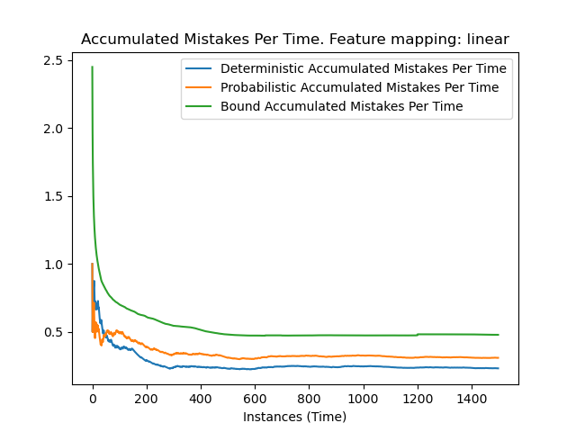
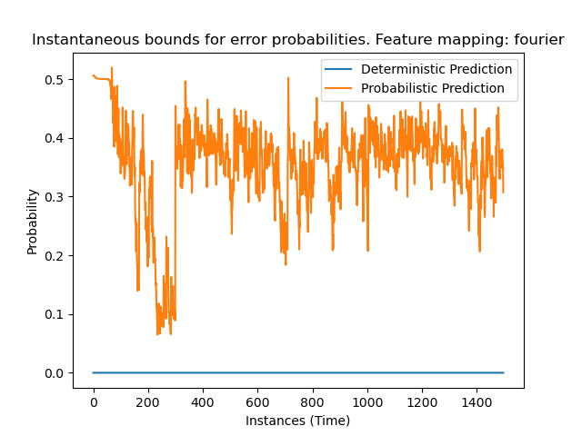
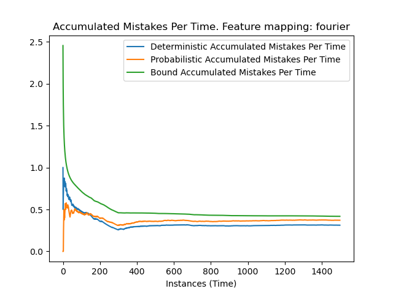

Note
Click here to download the full example code
Example: Use of AMRC (Adaptative MRC) for Online Learning
Example of using AMRC with dataset usenet2. We load the dataset, train the AMRC model one instance at a time and predict the next instance in each time instant.
{kind=link}
From left to right in the diagram above we can check what happens in every time moment. We have the optimization parameter from the previous time moment \(\mu_{t-1}\) and the learning parameters from the previous time moment \(\hat{\tau}_{t-1}, \lambda_{t-1}\). Using those parameters corresponding to time \(t-1\) the algorithm obtains the performance guarantee \(R(\mathcal{U}_{t-1})\). When receiving the next instance \(x_{t-1}\) the algorithm predicts its label \(\hat{y}_{t-1}\). Then, it receives the actual label \(y_{t-1}\) and it updates the model using it and therefore obtaining the new parameters for the next time instant: optimization parameter \(\mu_t\) and learning parameters \(\hat{\tau}_{t}, \lambda_{t}\).
In this example we fit an AMRC model sample by sample, obtaining the upper bounds of the error in every time instant, the accumulated mistakes per time, and the upper bound for the accumulated mistakes per time. We do this for both the deterministic and the probabilistic settings. In the first one, we always predict the label with greater probability and in the second we predict a label with probabilities determined by the model. Note that the upper bound for the accumulated mistakes per time is the same for both settings.
You can check more technical details of the documentation class amrc.
import matplotlib.pyplot as plt
import numpy as np
import pandas as pd
from sklearn.preprocessing import MinMaxScaler
from MRCpy import AMRC
from MRCpy.datasets import load_usenet2
# We fix the significance level (delta) in order to fix a confidence of
# 1-delta
delta = 0.05
# Import data
X, Y = load_usenet2()
# Normalize data
scaler = MinMaxScaler()
X = scaler.fit_transform(X)
# Number of classes
n_classes = len(np.unique(Y))
# Length of the instance vectors
n, d = X.shape
Y_pred = np.zeros(n - 1)
U_det = np.zeros(n - 1)
U_nondet = np.zeros(n - 1)
accumulated_mistakes_per_time_det = np.zeros(n - 1)
accumulated_mistakes_per_time_nondet = np.zeros(n - 1)
bound_accumulated_mistakes_per_time = np.zeros(n - 1)
df = pd.DataFrame()
for feature_mapping in ['linear', 'fourier']:
# Probabilistic Predictions
clf = AMRC(n_classes=2, phi=feature_mapping, deterministic=False)
mistakes = 0
sum_of_U = 0
for i in range(n - 1):
# Train the model with the instance x_t
clf.fit(X[i, :], Y[i])
# We get the upper bound
U_nondet[i] = clf.get_upper_bound()
# Use the model at this stage to predict the instance x_{t+1}
Y_pred[i] = clf.predict(X[i + 1, :])
# We calculate accumulated mistakes per time
if Y_pred[i] != Y[i + 1]:
mistakes += 1
accumulated_mistakes_per_time_nondet[i] = mistakes / (i + 1)
# We calculate the upper bound for accumulated mistakes per time
sum_of_U += U_nondet[i]
bound_accumulated_mistakes_per_time[i] = \
(sum_of_U + np.sqrt(2 * (i + 1) * np.log(1 / delta))) / (i + 1)
error_nondet = np.average(Y[1:] != Y_pred)
# Deterministic Predictions
clf = AMRC(n_classes=2, phi=feature_mapping, deterministic=True)
mistakes = 0
sum_of_U = 0
for i in range(n - 1):
# Train the model with the instance x_t
clf.fit(X[i, :], Y[i])
# We get the upper bound
U_det[i] = clf.get_upper_bound()
# Use the model at this stage to predict the instance x_{t+1}
Y_pred[i] = clf.predict(X[i + 1, :])
# We calculate accumulated mistakes
if Y_pred[i] != Y[i + 1]:
mistakes += 1
accumulated_mistakes_per_time_det[i] = mistakes / (i + 1)
error_det = np.average(Y[1:] != Y_pred)
df = df.append({'feature mapping': feature_mapping,
'deterministic error': "%1.3g" % error_det,
'non deterministic error': "%1.3g" % error_nondet},
ignore_index=True)
plt.figure()
plt.plot(U_det[1:])
plt.plot(U_nondet[1:])
plt.legend(['Deterministic Prediction', 'Probabilistic Prediction'])
plt.xlabel('Instances (Time)')
plt.ylabel('Probability')
plt.title('Instantaneous bounds for error probabilities. ' +
'Feature mapping: ' + feature_mapping)
plt.figure()
plt.plot(accumulated_mistakes_per_time_det)
plt.plot(accumulated_mistakes_per_time_nondet)
plt.plot(bound_accumulated_mistakes_per_time)
plt.legend(['Deterministic Accumulated Mistakes Per Time',
'Probabilistic Accumulated Mistakes Per Time',
'Bound Accumulated Mistakes Per Time'
])
plt.xlabel('Instances (Time)')
plt.title('Accumulated Mistakes Per Time. ' +
'Feature mapping: ' + feature_mapping)

- 
- 
- 
Out:
/Users/cguerrero/Documents/MRCpy_AMRC/examples/plot_3_example_amrc.py:127: FutureWarning: The frame.append method is deprecated and will be removed from pandas in a future version. Use pandas.concat instead.
df = df.append({'feature mapping': feature_mapping,
/Users/cguerrero/Documents/MRCpy_AMRC/examples/plot_3_example_amrc.py:127: FutureWarning: The frame.append method is deprecated and will be removed from pandas in a future version. Use pandas.concat instead.
df = df.append({'feature mapping': feature_mapping,
df.style.set_caption('AMRC Results')
Total running time of the script: ( 26 minutes 26.993 seconds)